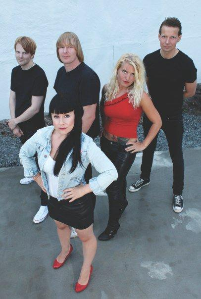

About
Featuring Andre Dahlmann of The Yum Yums on guitar/vocals and his wife Line Cecile Dahlmann on lead vocals, and boasting a signature song written by the great Andy Shernoff, Norway’s Dahlmanns could practically be considered a pop-punk supergroup. And if they’re not quite a supergroup, they’re at least a super group. The Shernoff-penned “I Love You Baby (But I Hate Your Friends)” is not just my favorite song of the year – it’s probably my favorite song of the past several years. Combining unabashed Ramones worship with the Euro-fied throwback power pop stylings of the Yum Yums, The Dahlmanns come off as perhaps the most upbeat sounding band on the planet. And what’s not to love about that? This band is all about high energy and big hooks and total fun – all the things you want in your summertime rock and roll! Line Cecile is a total natural on lead vocals - like a cross between Josie Cotton and a young Debbie Harry. Combine her charms with her husband’s command of classic power pop, and there’s just no way you can go wrong! If you’ve worn the grooves out of your Nikki and the Corvettes LP, this is the band for you.
The Dahlmanns’ latest EP – their second – comes on with two songs that would be #1 singles in my proverbial perfect world. “I Love You Baby (But I Hate Your Friends)”, on the strength of Shernoff’s master-crafted melodies and the band’s bright, buoyant delivery, rates as an instant classic of female-fronted power pop. If you don’t love it, there is something irreparably wrong with you. Right there with it is “Candypants”, a crunchy, driving number with a great chorus and an equally great lead vocal. “Smash You” tops off the EP in more of a rockin’ vein but switches seamlessly to a pop feel when the chorus hits. And that’s that – three songs, no filler, and you’re left wanting (much!) more. There’s a full album supposedly in the works, and I can’t imagine it disappointing given the band’s brief but flawless track record. Who wouldn’t want a half hour’s worth of Dahlmanns tuneage on hand for backyard barbeques and dance parties and Sunday housecleaning? But as a power pop guy, I do have a soft spot for music in the EP/singles format. So as long as they keep the killer singles comin’, I’ll be a happy camper. Great pop is all about that perfect three minutes – and it doesn’t get more perfect than “I Love You Baby (But I Hate Your Friends)”. If music is the best antidepressant, this is the premium stuff.
|
Links
|
 Twitter
Twitter